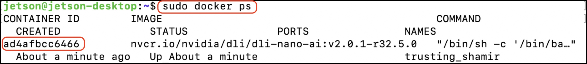

Dockerの保存
JupyterLab経由ではなく、ssh経由でJetson Nanoにログインします。
ssh jetson@192.168.55.1
DockerのIDを取得します。
sudo docker ps

Dockerをhandsonという名称で、commitします。
sudo docker commit ID(現在起動中のもの) handson
現在起動中のDockerを停止します。
sudo docker stop ID(現在起動中のもの)
CommitしたDockerの起動
sudo docker run --runtime nvidia -it --rm --network host \
--volume ~/nvdli-data:/nvdli-nano/data \
--device /dev/video0 \
--privileged \
handson